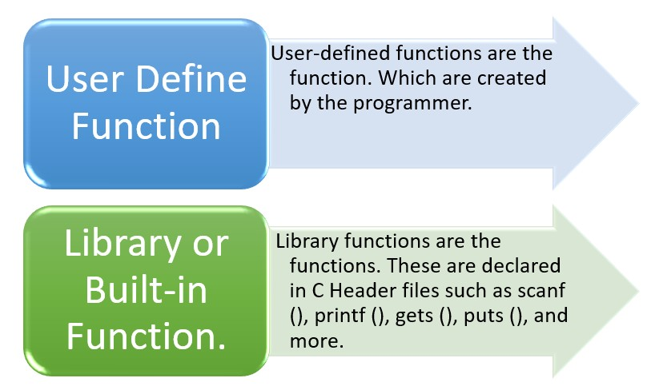
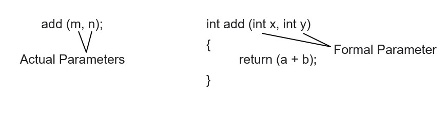

▶️ A function is a group of statements that performs a specific task.

Actual Parameters-The Parameters passed to a function.
Formal Parameters-The Parameters received by a function.

In a C programming language, we can call a function in two different ways, based on how we specify the arguments, and these two ways are:
▶️ In C language, a pointer is a variable whose value is the address of another variable. Instead of holding data directly, it holds the location (address) of the data in memory. Pointers are declared using the * symbol. They are widely used for dynamic memory allocation, arrays, strings, structures, and for efficient handling of functions.
In Short : -A pointer is a special variable in C that stores the memory address of another variable.
Example :-
#include stdio.h
void swap (int x, int y) //Formal Parameter
{
int temp;
temp = x;
x=y;
y=temp;
printf (“x = %d y = %d\n”, x, y);
}
int main ()
{
int a =10, b=20; //Actual Parameter
printf (“a = %d b =%d”, a, b);
swap (a, b);
return 0;
}
#include stdio.h
Void swap (int *x, int *y) //Formal Parameter
{
int temp;
temp = *x;
*x=*y;
*y=temp;
return;
}
int main ()
{
int a =34, b=47; //Actual Parameter
printf(“a=%d b=%d\n”, a, b);
swap (&a, &b);
printf(“After Swapping____________”);
printf(“a = %d b=%d”, a, b);
return 0;
}
The function does not return value but performs calculations using arguments. That is called No Return with Arguments.
A function that will return any type of value, whether it is a float value or a character value. That means that you can return any type of value from this function. This is also called Return with Arguments.